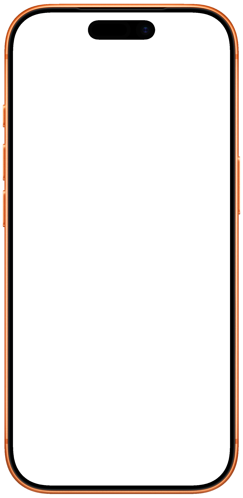
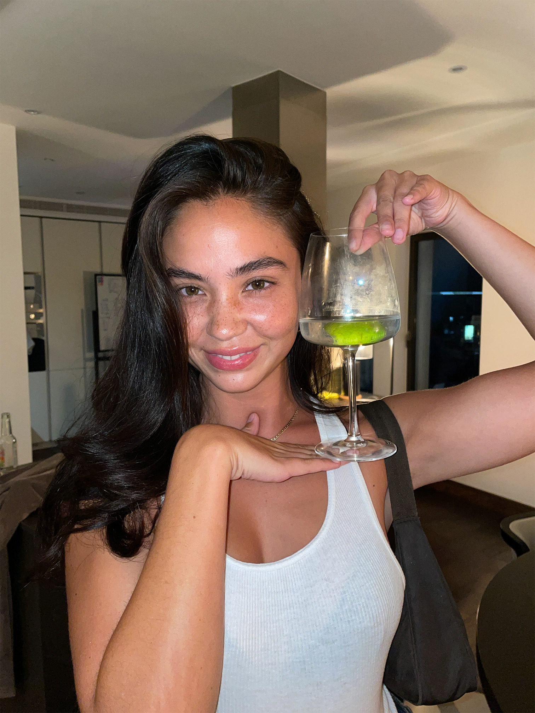
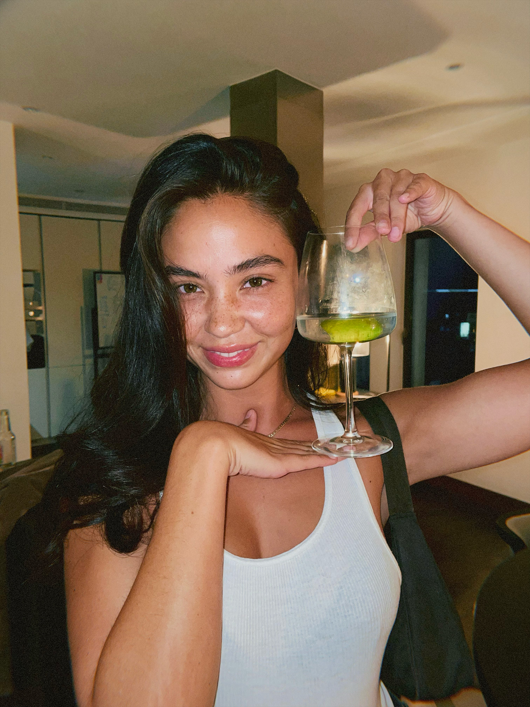
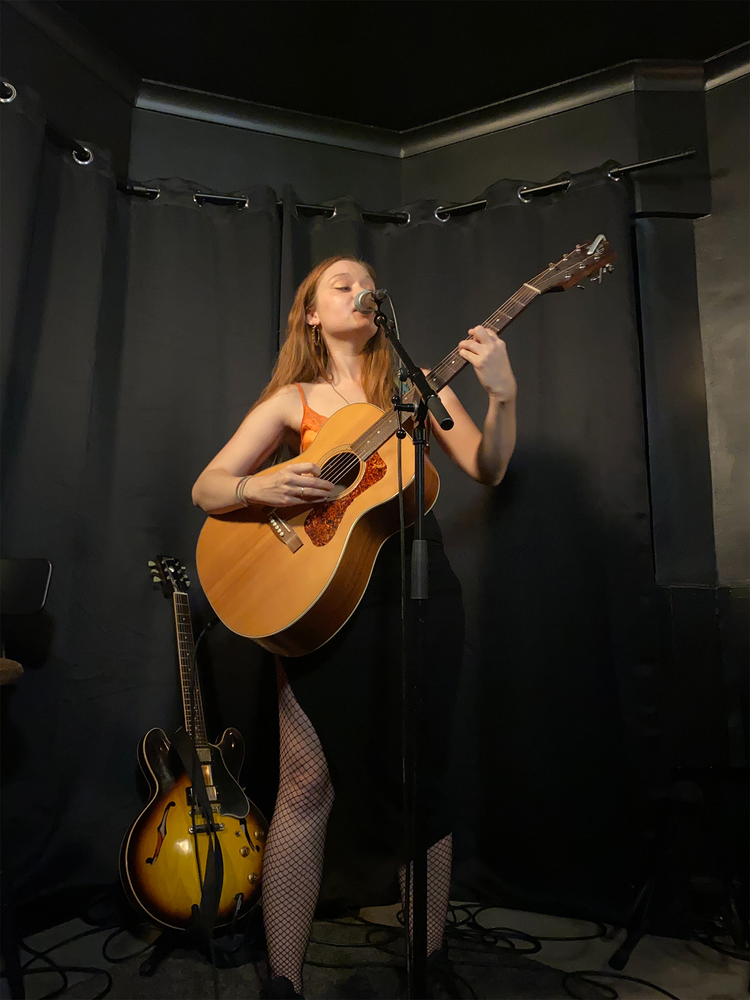
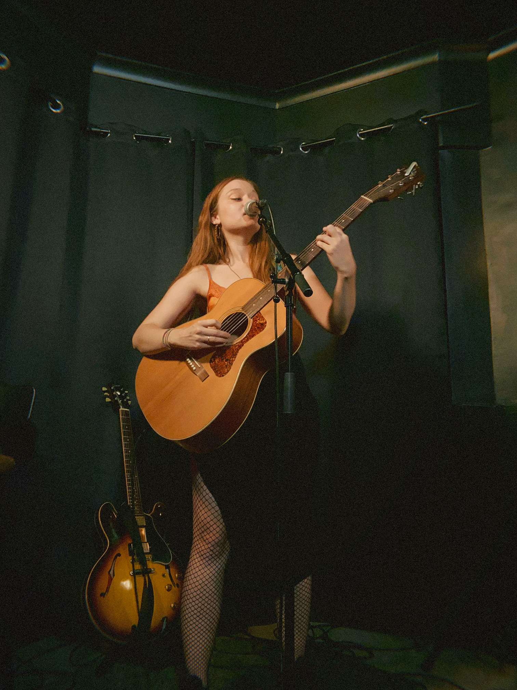
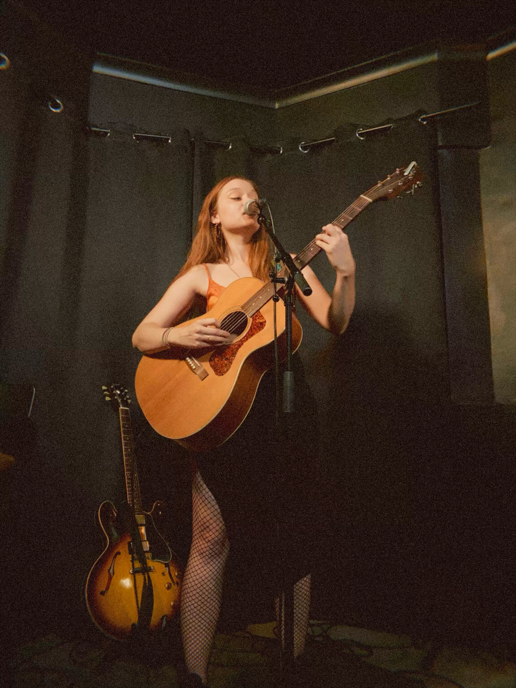
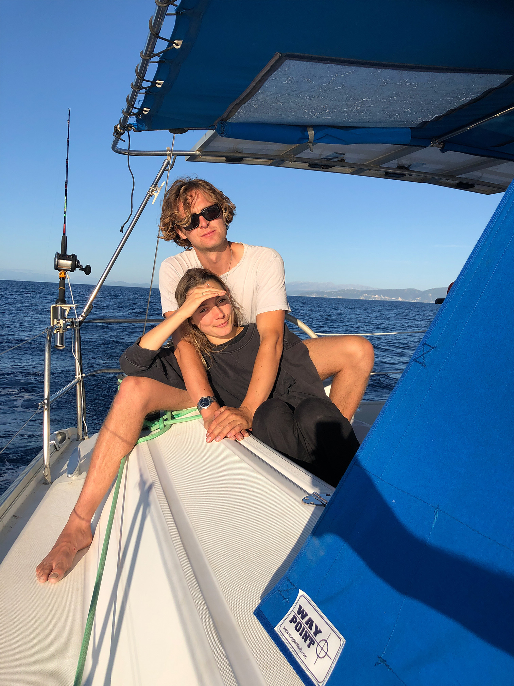
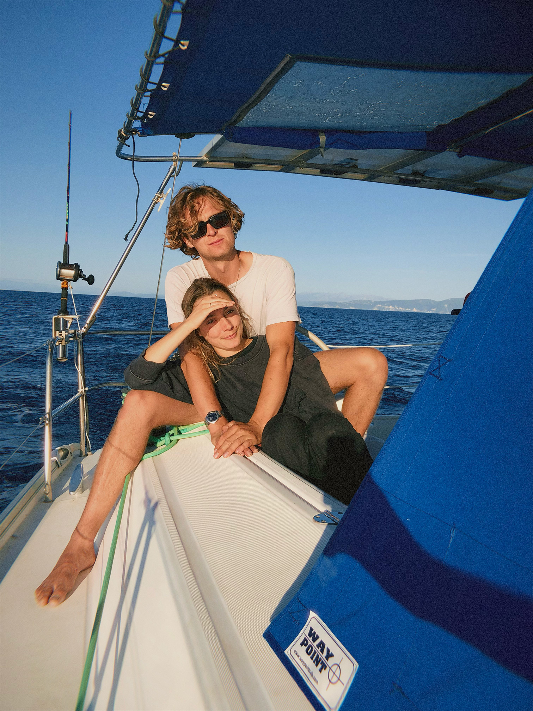
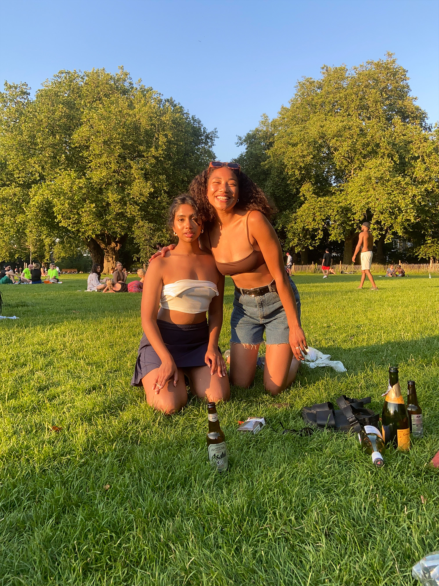
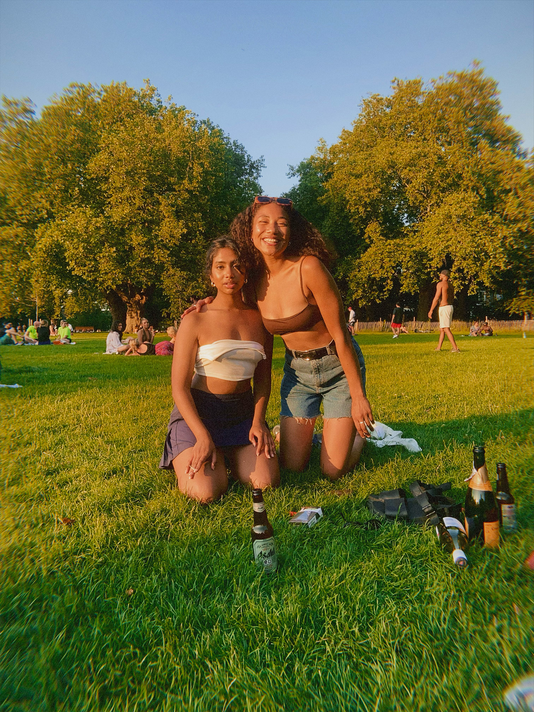

2B+snaps
#1US App Store
$42Mraised
1.5M+users









afterbefore · hold to see original
Bringing a procedural film camera to anyone with an iPhone.
Lapse is the social disposable camera app that makes sharing personal again.
As a founding member and Head of Camera, I led the design and development of a proprietary iOS image pipeline, while contributing to product vision, creative direction, marketing, and social strategy.
2B+ snaps taken and loved using Lapse.